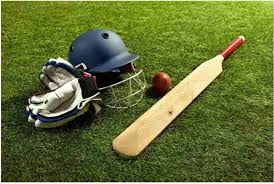
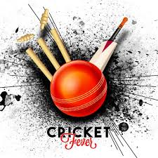
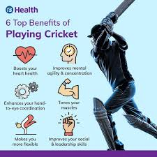
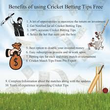

CRICKET
Cricket is a bat-and-ball sport that is particularly popular in countries such as India, Australia, England, Pakistan, South Africa, and the West Indies. It’s often played at the professional level but also as a recreational pastime. The game involves two teams, usually of eleven players each, who take turns batting and fielding.
Cricc images


Key Laws of Cricket:
1. The Pitch:
The pitch is a rectangular area, 22 yards long and 10 feet wide, situated in the center of the cricket field.
The pitch has two sets of stumps (three vertical sticks) at each end, which are protected by the batsman when batting.
2. The Teams:
A cricket match is typically played between two teams, with each team consisting of 11 players.
Teams switch between batting and fielding.
3. The Objective:
The objective for the batting team is to score as many runs as possible.
The objective for the bowling/fielding team is to dismiss the batsmen and limit the runs scored.
Benifits of Cricket:


Benifits:
1. Improves stamina and endurance.
2. Excellent cardiovascular activity.
3. Keeps the heart healthy.
4. Keeps body very active